Bread slices: how the moves are cut and captioned
Clip 2026-10-27 20:04 · taking bread slices from a bag and dealing them onto paper plates · 60 s · refined calibration
16 moves ≥ 1 s captioned (of 29 moves; shorter ones are not captioned) · not captioned because the move is cut off by the start or end of the data: #0 (0.20–1.37 s), #28 (58.97–59.97 s) · calibration: refined (2026-11-02T23:15:09) · whole timeline: every move and the gaps between
With 1 s of context before and after ▸ (dimmed outside the move)
- Grab the top bread slice from the rightmost white paper plate and put it on the middle white paper plate.
- Take the top piece of bread from the rightmost disposable plate and place it on the middle disposable plate.
- Lift up the top wheat bread slice from the rightmost white plate and set it on the middle white plate.
- Pick up the top slice of brown bread from the rightmost white paper plate and place it on the middle white paper plate.
- Grab the top slice of bread from the rightmost white plate and put it on the middle white plate.
call A's reasoning
The right hand (yellow skeleton, blue dot) starts with fingers open over a plate holding bread slices. Between Frame 1 and 2, the fingers close around the top slice of bread on the rightmost plate. From Frame 3 to 5, the palm rises and moves leftward while carrying the bread, as confirmed by the 3D trajectory showing 23 cm displacement and 12 cm height gain. In Frames 6–8, the hand places the bread onto the middle plate, where it is released (fingers open slightly in Frame 8). The action is complete: pick up from right plate, place on middle plate.
What call A was given ▸ (8 frames + glove measurements)


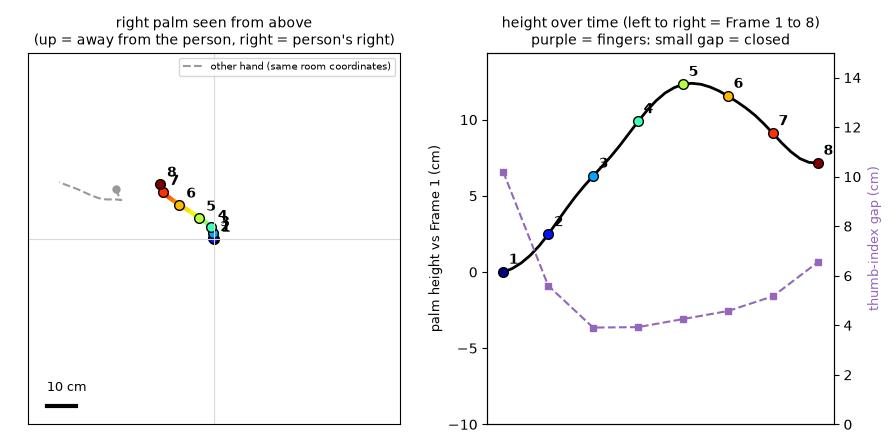
Glove and tracker measurements (3D, in the room; not affected by the camera moving): - The right palm ends 18 cm to the person's left, 19 cm away from the person, 7 cm up from where it started (23 cm in a straight line, 33 cm along its path), and it rises up to 12 cm. - The fingers start open, then close between Frame 1 and 2 (thumb-index fingertip gap at Frames 1-8: 10, 6, 4, 4, 4, 5, 5, 7 cm). - The head camera turns 10 degrees to the left during these frames, so in the pictures the hand can look more still than it is. - The left hand meanwhile moves 19 cm to the person's left.
With 1 s of context before and after ▸ (dimmed outside the move)
call A's reasoning
The right palm moves 22 cm to the person's right and drops 4 cm, but the fingers remain half-closed (5-6 cm gap) throughout all frames, never closing on any object. The left hand performs the actual grasping and moving of the bread slice, while the right hand only hovers nearby without contact or meaningful interaction. Since no grasping, picking, or placing occurs with the right hand, and it does not purposefully move toward an object with clear intent to interact, the action is N/A.
What call A was given ▸ (8 frames + glove measurements)


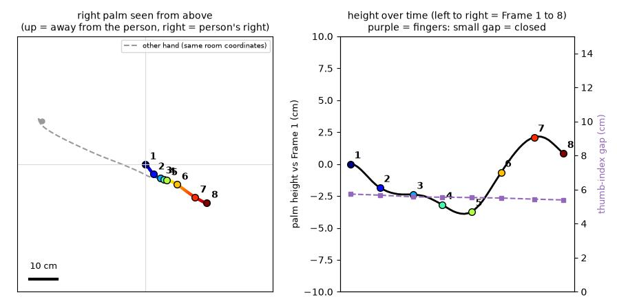
Glove and tracker measurements (3D, in the room; not affected by the camera moving): - The right palm ends 22 cm to the person's right, 14 cm toward the person from where it started (22 cm in a straight line, 27 cm along its path), and it drops by up to 4 cm. - The fingers stay half-closed the whole time (thumb-index fingertip gap 5-6 cm): they do not close on anything. - The head camera turns 6 degrees to the right during these frames, so in the pictures the hand can look more still than it is. - The left hand meanwhile moves 40 cm to the person's right, 20 cm toward the person, 6 cm up.
With 1 s of context before and after ▸ (dimmed outside the move)
- Move the right hand to the left over the bread slice.
- Move the right hand to the left over the piece of bread.
- Move the right hand to the left over the slice of brown bread.
- Move the right hand to the left over the wheat bread slice.
call A's reasoning
The right palm moves approximately 18 cm along the desk surface to the person's left, as indicated by the trajectory and room measurements. The fingers remain half-closed (5 cm gap) throughout the sequence and never close on the bread or plate, meaning no grasp or pick-up occurs. The hand simply translates over the objects without interaction.
What call A was given ▸ (8 frames + glove measurements)


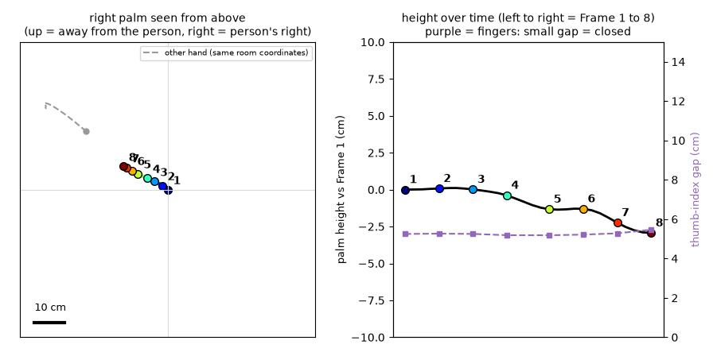
Glove and tracker measurements (3D, in the room; not affected by the camera moving): - The right palm ends 15 cm to the person's left, 8 cm away from the person from where it started (17 cm in a straight line, 18 cm along its path), and it stays at the same height (within 3 cm), i.e. it moves along the desk surface. - The fingers stay half-closed the whole time (thumb-index fingertip gap 5-5 cm): they do not close on anything. - The head camera turns 28 degrees to the right during these frames, so in the pictures the hand can look more still than it is. - The left hand meanwhile moves 14 cm to the person's left, 8 cm away from the person, 5 cm down.
With 1 s of context before and after ▸ (dimmed outside the move)
- Move the right hand toward the piece of bread on the middle white plate.
- Move the right hand toward the wheat bread slice on the middle disposable plate.
- Move the right hand toward the slice of brown bread on the middle paper plate.
- Move the right hand toward the bread slice on the middle white paper plate.
call A's reasoning
The right palm moves 18 cm in a straight line (20 cm along path), ending 15 cm left and 9 cm down from start — indicating significant motion, not static holding. The thumb-index gap stays at 6–12 cm throughout (never closes), so no grasping occurs. The hand moves toward the bread on the middle plate but does not close around it; thus, it is reaching or positioning near the object without picking up. Since the motion is purposeful and directed at the bread, we describe the intent as moving toward it.
What call A was given ▸ (8 frames + glove measurements)


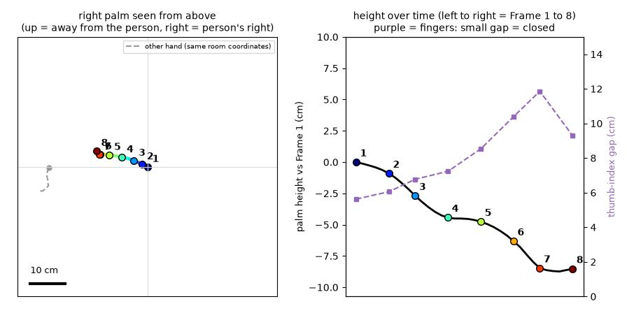
Glove and tracker measurements (3D, in the room; not affected by the camera moving): - The right palm ends 15 cm to the person's left, 5 cm away from the person, 9 cm down from where it started (18 cm in a straight line, 20 cm along its path), and it drops by up to 9 cm. - The fingers stay half-closed the whole time (thumb-index fingertip gap 6-12 cm): they do not close on anything. - The head camera turns 21 degrees to the left during these frames, so in the pictures the hand can look more still than it is. - The left hand meanwhile moves 7 cm toward the person.
With 1 s of context before and after ▸ (dimmed outside the move)
- Grab a bread slice from the center white paper plate and put it on the rightmost white paper plate.
- Lift up a piece of bread from the center disposable plate and place it on the rightmost disposable plate.
- Take a slice of brown bread from the center white plate and set it on the rightmost white plate.
- Pick up a wheat bread slice from the center white paper plate and place it on the rightmost white paper plate.
- Grab a slice of bread from the center white plate and put it on the rightmost white plate.
call A's reasoning
The right hand starts open over a plate with bread (Frame 1), then closes around a slice between Frames 1–2 (thumb-index gap drops from 7cm to 3cm). The palm rises 16 cm and moves 23 cm in 3D space while carrying the bread, as shown by the trajectory and height graph. By Frame 8, the hand places the bread onto another plate on the right, confirmed by the final position and finger opening (gap increases to 8cm). The left hand remains stationary and is ignored per rules.
What call A was given ▸ (8 frames + glove measurements)


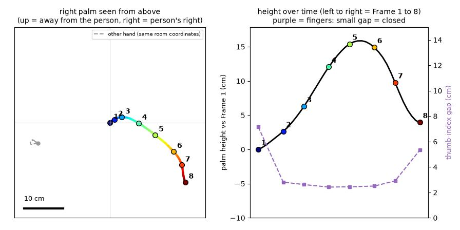
Glove and tracker measurements (3D, in the room; not affected by the camera moving): - The right palm ends 19 cm to the person's right, 15 cm toward the person, 4 cm up from where it started (23 cm in a straight line, 41 cm along its path), and it rises up to 16 cm. - The fingers start open, then close between Frame 1 and 2 (thumb-index fingertip gap at Frames 1-8: 7, 3, 3, 2, 2, 3, 3, 5 cm). - The head camera turns 7 degrees to the right during these frames, so in the pictures the hand can look more still than it is. - The left hand meanwhile moves less than 3 cm in any direction.
With 1 s of context before and after ▸ (dimmed outside the move)
- Slide the bread slice on the rightmost white paper plate to the left.
- Slide the piece of bread on the rightmost disposable plate to the left.
- Slide the slice of brown bread on the rightmost white plate to the left.
- Slide the wheat bread slice on the rightmost paper plate to the left.
call A's reasoning
The right palm moves 20 cm along the desk surface to the person's left, as shown by the trajectory and confirmed by the 3D measurements. The fingers remain open throughout (7-8 cm gap), so no grasping occurs. The hand slides over the bread on the rightmost plate without lifting it, indicating a sliding motion rather than picking up.
What call A was given ▸ (8 frames + glove measurements)


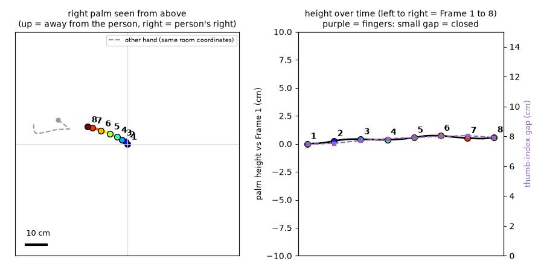
Glove and tracker measurements (3D, in the room; not affected by the camera moving): - The right palm ends 19 cm to the person's left, 8 cm away from the person from where it started (20 cm in a straight line, 20 cm along its path), and it stays at the same height (within 3 cm), i.e. it moves along the desk surface. - The fingers stay open the whole time (thumb-index fingertip gap 7-8 cm): they do not close on anything. - The head camera turns 11 degrees to the left during these frames, so in the pictures the hand can look more still than it is. - The left hand meanwhile moves 12 cm to the person's left, 4 cm up.
With 1 s of context before and after ▸ (dimmed outside the move)
- Move the right hand toward the piece of bread on the middle white plate.
- Move the right hand toward the wheat bread slice on the middle disposable plate.
- Move the right hand toward the slice of brown bread on the middle paper plate.
- Move the right hand toward the bread slice on the middle white paper plate.
call A's reasoning
The right palm moves 23 cm to the left and rises 7 cm, indicating a clear translational motion rather than a static hold. The finger gap remains 6-12 cm throughout, confirming the hand never closes to grasp or pick up the bread. The trajectory shows the hand moving from the rightmost plate toward the middle plate, ending directly above the bread on that plate. Since the hand does not grasp, the action is a purposeful movement toward the object.
What call A was given ▸ (8 frames + glove measurements)


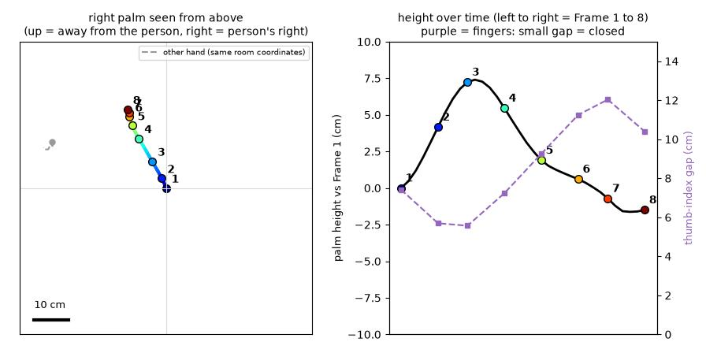
Glove and tracker measurements (3D, in the room; not affected by the camera moving): - The right palm ends 11 cm to the person's left, 23 cm away from the person from where it started (23 cm in a straight line, 30 cm along its path), and it rises up to 7 cm. - The fingers stay open the whole time (thumb-index fingertip gap 6-12 cm): they do not close on anything. - The head camera turns 1 degrees to the left during these frames. - The left hand meanwhile moves less than 3 cm in any direction.
With 1 s of context before and after ▸ (dimmed outside the move)
- Put the bread slice on the rightmost white paper plate.
- Set the piece of bread on the rightmost white paper plate.
- Place the slice of brown bread on the rightmost white paper plate.
- Put the wheat bread slice on the rightmost white paper plate.
call A's reasoning
The right hand (yellow skeleton, blue dot) starts near a plate with bread, moves upward and rightward (rising 10 cm, moving 23 cm in 3D), then descends to place the bread onto another plate. The fingers remain open throughout (7–12 cm gap), so no grasping occurs — the hand is carrying or placing without closing. The trajectory and height graph confirm motion: rise during frames 2–4, fall during 5–8. Since the hand ends over a different plate than it started, and the bread moves with it, this is a placement action. No object is picked up because fingers never close; instead, the hand transports and releases the bread by lowering it onto the target plate.
What call A was given ▸ (8 frames + glove measurements)


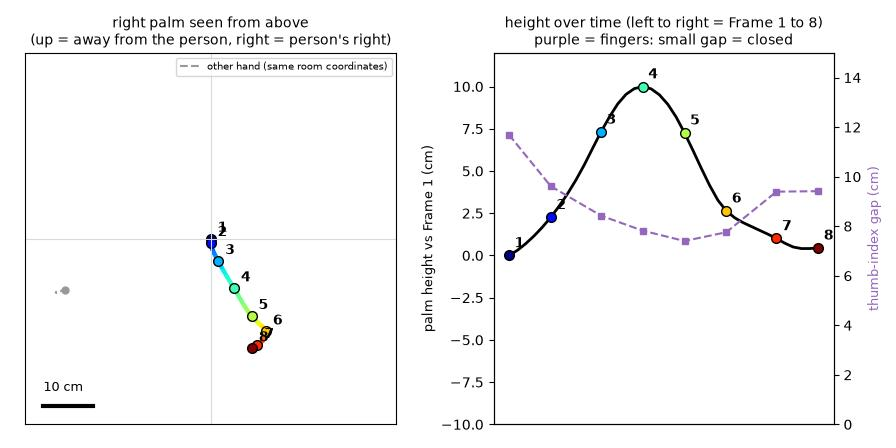
Glove and tracker measurements (3D, in the room; not affected by the camera moving): - The right palm ends 8 cm to the person's right, 22 cm toward the person from where it started (23 cm in a straight line, 34 cm along its path), and it rises up to 10 cm. - The fingers stay open the whole time (thumb-index fingertip gap 7-12 cm): they do not close on anything. - The head camera turns 6 degrees to the right during these frames, so in the pictures the hand can look more still than it is. - The left hand meanwhile moves less than 3 cm in any direction.
With 1 s of context before and after ▸ (dimmed outside the move)
- Move the right hand toward the bread slices without touching them.
- Move the right hand toward the wheat bread slices without touching them.
- Move the right hand toward the pieces of bread without touching them.
- Move the right hand toward the slices of brown bread without touching them.
- Move the right hand toward the bread slices without making contact.
call A's reasoning
The right hand (yellow skeleton, blue dot) moves from right to left across the table, as shown by the trajectory and confirmed by the 3D measurements (24 cm right, 11 cm toward, 6 cm down). The fingers remain open throughout (7–11 cm gap), so no grasping occurs. The hand hovers over or near bread slices but never closes on them. Since there is no object interaction and the motion is purposeful but non-contact, the action is best described as moving toward or hovering over the bread without touching it.
What call A was given ▸ (8 frames + glove measurements)


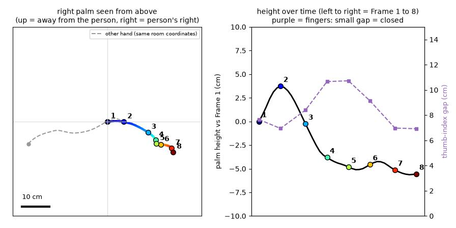
Glove and tracker measurements (3D, in the room; not affected by the camera moving): - The right palm ends 24 cm to the person's right, 11 cm toward the person, 6 cm down from where it started (27 cm in a straight line, 33 cm along its path), and it goes up to 4 cm and down to 6 cm. - The fingers stay open the whole time (thumb-index fingertip gap 7-11 cm): they do not close on anything. - The head camera turns 19 degrees to the right during these frames, so in the pictures the hand can look more still than it is. - The left hand meanwhile moves 34 cm to the person's right, 8 cm away from the person, 4 cm down.
With 1 s of context before and after ▸ (dimmed outside the move)
- Move the bread slice from the rightmost white paper plate to the leftmost white paper plate.
- Move the piece of bread from the rightmost disposable plate to the leftmost disposable plate.
- Move the slice of brown bread from the rightmost white plate to the leftmost white plate.
- Move the wheat bread slice from the rightmost white paper plate to the leftmost white paper plate.
call A's reasoning
The right hand (yellow skeleton, blue dot) starts at the rightmost plate holding a stack of bread slices. The trajectory shows the palm moving leftward across the table (40 cm straight, 46 cm path) and rising 9 cm, then descending to place the bread on the leftmost plate. The fingers remain half-closed (5-6 cm gap) throughout, indicating no grasping or releasing occurred—only transport. The left hand is stationary and irrelevant. The action is purely moving the bread from one plate to another.
What call A was given ▸ (8 frames + glove measurements)


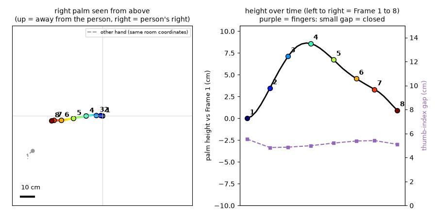
Glove and tracker measurements (3D, in the room; not affected by the camera moving): - The right palm ends 39 cm to the person's left, 4 cm toward the person from where it started (40 cm in a straight line, 46 cm along its path), and it rises up to 9 cm. - The fingers stay half-closed the whole time (thumb-index fingertip gap 5-6 cm): they do not close on anything. - The head camera turns 35 degrees to the left during these frames, so in the pictures the hand can look more still than it is. - The left hand meanwhile moves 4 cm to the person's left, 6 cm toward the person.
With 1 s of context before and after ▸ (dimmed outside the move)
- Move the bread slice from the white plate to the white paper plate.
- Transfer the piece of bread from the white plate to the white paper plate.
- Carry the wheat bread slice from the white plate to the white paper plate.
- Move the slice of brown bread from the white plate to the white paper plate.
call A's reasoning
The right hand (yellow skeleton, blue dot) starts near the right plate and moves leftward and upward, ending over the left plate. The palm rises ~10 cm and shifts 15 cm left — consistent with carrying. Fingers remain half-closed (4–5 cm gap), never fully closing or opening, so no grasp/release occurred. The hand is clearly transporting a slice of bread from the right plate to the left plate, as seen in Frame 8 where it’s positioned above the left plate’s stack.
What call A was given ▸ (8 frames + glove measurements)


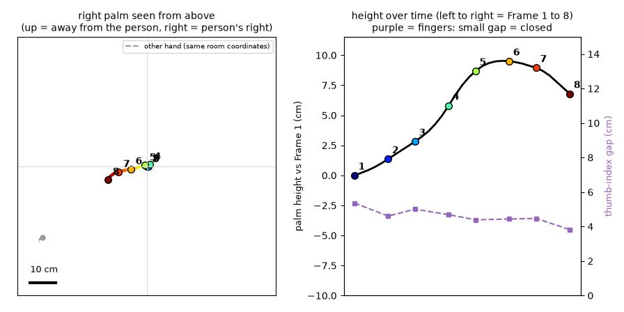
Glove and tracker measurements (3D, in the room; not affected by the camera moving): - The right palm ends 15 cm to the person's left, 5 cm toward the person, 7 cm up from where it started (17 cm in a straight line, 26 cm along its path), and it rises up to 10 cm. - The fingers stay half-closed the whole time (thumb-index fingertip gap 4-5 cm): they do not close on anything. - The head camera turns 5 degrees to the left during these frames, so in the pictures the hand can look more still than it is. - The left hand meanwhile moves less than 3 cm in any direction.
With 1 s of context before and after ▸ (dimmed outside the move)
call A's reasoning
The right hand (yellow skeleton, blue dot) starts near a slice of bread on the right plate. The trajectory shows it moves leftward and upward, ending over the left plate with stacked bread. The glove data confirms the palm rises 9 cm and moves 20 cm left, while fingers remain open (7–14 cm gap), so no grasp occurs. The hand does not pick up or place the bread — it merely hovers or approaches. Since no object is interacted with (no closing, no lifting, no releasing), and the motion is just reaching without completion of an atomic action like 'grasp' or 'place', the action is not meaningful per rules.
What call A was given ▸ (8 frames + glove measurements)


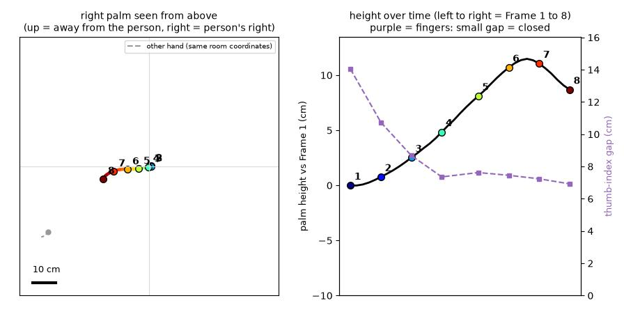
Glove and tracker measurements (3D, in the room; not affected by the camera moving): - The right palm ends 20 cm to the person's left, 5 cm toward the person, 9 cm up from where it started (22 cm in a straight line, 29 cm along its path), and it rises up to 11 cm. - The fingers stay open the whole time (thumb-index fingertip gap 7-14 cm): they do not close on anything. - The head camera turns 10 degrees to the left during these frames, so in the pictures the hand can look more still than it is. - The left hand meanwhile moves less than 3 cm in any direction.
With 1 s of context before and after ▸ (dimmed outside the move)
- Move the right hand toward the rightmost white plate.
- Move the right hand toward the rightmost disposable plate.
- Move the right hand toward the rightmost paper plate.
call A's reasoning
The right hand (yellow skeleton) starts near a plate of bread on the left and moves across the table to the right, as indicated by the trajectory path and the 3D measurements showing a 35 cm shift to the right. The hand remains open throughout the sequence (thumb-index gap 6-11 cm), so it does not grasp or pick up the bread. The hand ends its motion hovering over the rightmost plate, indicating a movement towards that specific object.
What call A was given ▸ (8 frames + glove measurements)


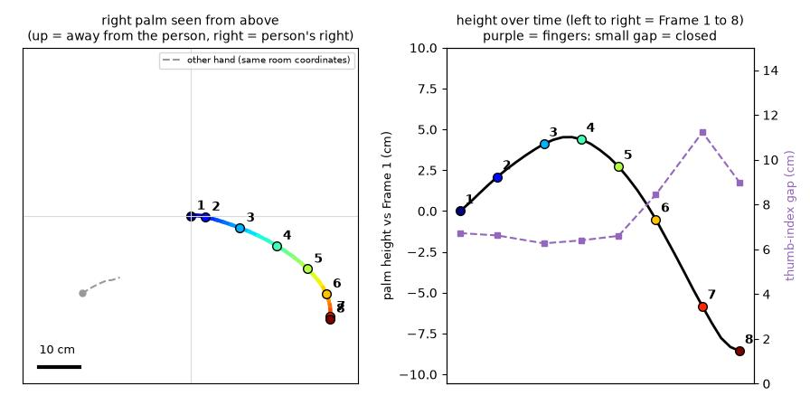
Glove and tracker measurements (3D, in the room; not affected by the camera moving): - The right palm ends 35 cm to the person's right, 26 cm toward the person, 9 cm down from where it started (44 cm in a straight line, 53 cm along its path), and it goes up to 5 cm and down to 9 cm. - The fingers stay open the whole time (thumb-index fingertip gap 6-11 cm): they do not close on anything. - The head camera turns 25 degrees to the right during these frames, so in the pictures the hand can look more still than it is. - The left hand meanwhile moves 9 cm to the person's right, 4 cm away from the person.
With 1 s of context before and after ▸ (dimmed outside the move)
- Grab a bread slice from the rightmost white paper plate and put it on the middle white paper plate.
- Lift up a piece of bread from the rightmost disposable plate and place it on the middle disposable plate.
- Take a slice of brown bread from the rightmost white plate and set it on the middle white plate.
- Pick up a wheat bread slice from the rightmost white paper plate and place it on the middle white paper plate.
- Grab a slice of bread from the rightmost white plate and place it on the middle white plate.
call A's reasoning
The right hand starts open over a plate with bread (Frame 1), closes to grasp a slice (Frames 2-3), lifts it while moving left and upward (Frames 4-5), then lowers and places it onto the middle empty plate (Frames 6-7), finally opening to release the bread (Frame 8). The trajectory and height graph confirm a pick-and-place motion, and finger gap data confirms grasp and release.
What call A was given ▸ (8 frames + glove measurements)


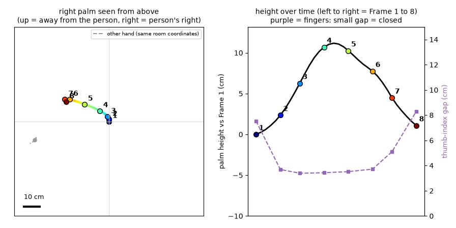
Glove and tracker measurements (3D, in the room; not affected by the camera moving): - The right palm ends 27 cm to the person's left, 12 cm away from the person from where it started (27 cm in a straight line, 42 cm along its path), and it rises up to 11 cm. - The fingers start open, then close between Frame 1 and 2, then open again between Frame 7 and 8 (thumb-index fingertip gap at Frames 1-8: 8, 4, 3, 3, 4, 4, 5, 8 cm). - The head camera turns 13 degrees to the left during these frames, so in the pictures the hand can look more still than it is. - The left hand meanwhile moves less than 3 cm in any direction.
With 1 s of context before and after ▸ (dimmed outside the move)
- Transfer the bread slice from the rightmost white paper plate to the middle white paper plate.
- Move the piece of bread from the rightmost disposable plate to the middle disposable plate.
- Shift the slice of brown bread from the rightmost white plate to the middle white plate.
- Move the wheat bread slice from the rightmost white paper plate to the middle white paper plate.
- Transfer the slice of bread from the rightmost disposable plate to the middle disposable plate.
call A's reasoning
The right hand starts over the rightmost plate holding a slice of bread. The trajectory shows the palm moving leftward and upward (rising 11 cm) while carrying the bread. The finger gap remains wide (7-11 cm) throughout, indicating the hand is holding the bread open-handed rather than grasping it tightly. The hand moves the bread from the rightmost plate to the middle plate and lowers it there.
What call A was given ▸ (8 frames + glove measurements)


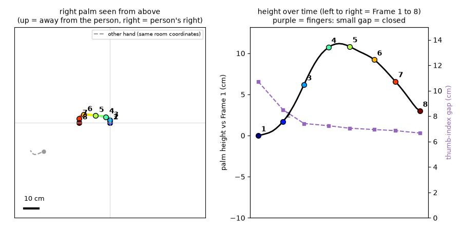
Glove and tracker measurements (3D, in the room; not affected by the camera moving): - The right palm ends 21 cm to the person's left from where it started (21 cm in a straight line, 38 cm along its path), and it rises up to 11 cm. - The fingers stay open the whole time (thumb-index fingertip gap 7-11 cm): they do not close on anything. - The head camera turns 4 degrees to the left during these frames. - The left hand meanwhile moves 9 cm to the person's left.
With 1 s of context before and after ▸ (dimmed outside the move)
call A's reasoning
The right hand (yellow skeleton, blue dot) starts near the middle plate and moves rightward to an empty plate, then returns leftward toward the middle plate. The trajectory shows a clear round trip of ~39 cm. However, the glove measurements confirm the fingers remain open (6–7 cm gap) throughout all frames — no grasping occurs. The left hand is the one interacting with bread (grasping and lifting), while the right hand only moves in space without contacting or manipulating any object. Since the right hand does not grasp, pick, place, or meaningfully interact with any object, and its motion is not purposefully directed toward an object for interaction (it merely hovers or passes by), the action is non-interactive.
What call A was given ▸ (8 frames + glove measurements)


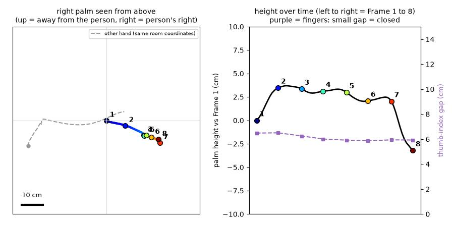
Glove and tracker measurements (3D, in the room; not affected by the camera moving): - The right palm ends 25 cm to the person's right, 9 cm toward the person, 3 cm down from where it started (29 cm in a straight line, 39 cm along its path), and it goes up to 4 cm and down to 3 cm. - The fingers stay open the whole time (thumb-index fingertip gap 6-7 cm): they do not close on anything. - The head camera turns 7 degrees to the right during these frames, so in the pictures the hand can look more still than it is. - The left hand meanwhile moves 46 cm to the person's right, 16 cm away from the person, 7 cm up.
15 moves ≥ 1 s captioned (of 25 moves; shorter ones are not captioned) · not captioned because the move is cut off by the start or end of the data: #24 (58.64–59.87 s) · calibration: refined (2026-11-02T23:15:09) · whole timeline: every move and the gaps between
With 1 s of context before and after ▸ (dimmed outside the move)
call A's reasoning
The left palm moves 13 cm along its path, rising 5 cm and shifting rightward, indicating a clear motion rather than static holding. However, the glove measurements confirm the fingers remain open (6–8 cm gap) throughout all frames, meaning no grasping, picking, or placing occurs. The hand hovers near the bread but never closes on it, so no object interaction is completed. Per rules, if no meaningful action (grasp/pick/place) is performed, return 'N/A'.
What call A was given ▸ (8 frames + glove measurements)


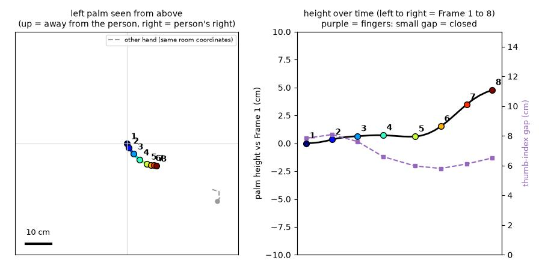
Glove and tracker measurements (3D, in the room; not affected by the camera moving): - The left palm ends 12 cm to the person's right, 9 cm toward the person, 5 cm up from where it started (13 cm in a straight line, 16 cm along its path), and it rises up to 5 cm. - The fingers stay open the whole time (thumb-index fingertip gap 6-8 cm): they do not close on anything. - The head camera turns 3 degrees to the right during these frames. - The right hand meanwhile moves 5 cm away from the person, 13 cm up.
With 1 s of context before and after ▸ (dimmed outside the move)
- Grab the bread slice from the leftmost white plate and put it on the middle white plate.
- Lift up the piece of bread from the leftmost disposable plate and set it on the middle disposable plate.
- Take the slice of brown bread from the leftmost white paper plate and place it on the middle white paper plate.
- Pick up the wheat bread slice from the leftmost white plate and put it on the middle white plate.
- Grab the slice of bread from the leftmost disposable plate and place it on the middle disposable plate.
call A's reasoning
The left hand starts open over the leftmost plate (Frames 1-3), then closes around the bread slice between Frames 4 and 5 as confirmed by the glove data (thumb-index gap drops to 3 cm). The palm then rises and moves rightward (Frames 5-8), carrying the bread to the middle plate, where it is placed down with fingers still closed.
What call A was given ▸ (8 frames + glove measurements)


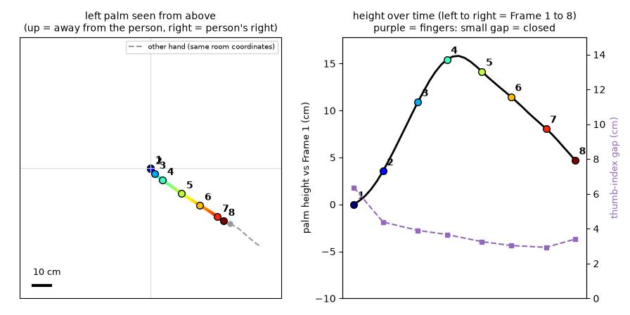
Glove and tracker measurements (3D, in the room; not affected by the camera moving): - The left palm ends 41 cm to the person's right, 30 cm toward the person, 5 cm up from where it started (41 cm in a straight line, 55 cm along its path), and it rises up to 16 cm. - The fingers start open, then close between Frame 4 and 5 (thumb-index fingertip gap at Frames 1-8: 6, 4, 4, 4, 3, 3, 3, 3 cm). - The head camera turns 13 degrees to the right during these frames, so in the pictures the hand can look more still than it is. - The right hand meanwhile moves 16 cm to the person's right, 12 cm toward the person, 4 cm up.
With 1 s of context before and after ▸ (dimmed outside the move)
- Grab the top bread slice from the middle white paper plate and put it on the rightmost white paper plate.
- Lift up the top piece of bread from the middle disposable plate and set it on the rightmost disposable plate.
- Take the top wheat bread slice from the middle white plate and place it on the rightmost white plate.
- Pick up the top slice of brown bread from the middle white paper plate and place it on the rightmost white paper plate.
- Grab the top slice of bread from the middle white plate and place it on the rightmost white plate.
call A's reasoning
The left hand starts open over a plate with bread slices, closes its fingers between Frame 1 and 2 to grasp the top slice, lifts it while moving rightward and upward (as confirmed by 3D trajectory and height graph), then opens its fingers between Frame 7 and 8 to release the slice onto the rightmost plate. The motion is deliberate and completes a full pick-and-place cycle within the frames.
What call A was given ▸ (8 frames + glove measurements)


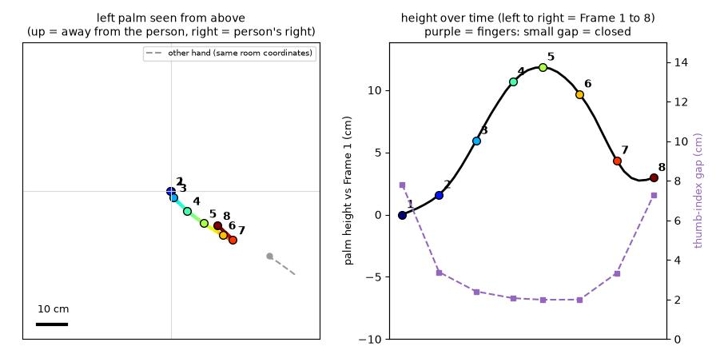
Glove and tracker measurements (3D, in the room; not affected by the camera moving): - The left palm ends 16 cm to the person's right, 12 cm toward the person from where it started (16 cm in a straight line, 39 cm along its path), and it rises up to 12 cm. - The fingers start open, then close between Frame 1 and 2, then open again between Frame 7 and 8 (thumb-index fingertip gap at Frames 1-8: 8, 3, 2, 2, 2, 2, 3, 7 cm). - The head camera turns 2 degrees to the left during these frames. - The right hand meanwhile moves 9 cm to the person's right, 6 cm toward the person.
With 1 s of context before and after ▸ (dimmed outside the move)
- Move the left hand over the white paper plates with bread slices.
- Move the left hand over the white plates with pieces of bread.
- Move the left hand over the white paper plates with pieces of bread.
- Move the left hand over the white plates with wheat bread slices.
call A's reasoning
The left palm moves 27 cm in a straight line (43 cm along path) ending 18 cm left and 6 cm up from start, indicating significant motion. However, the thumb-index gap remains 7-11 cm throughout — fingers never close. The hand hovers over plates with bread but does not grasp or lift any object. Since no grasping occurs and the hand only moves without interacting with objects, the action is non-grasping motion toward or over objects.
What call A was given ▸ (8 frames + glove measurements)


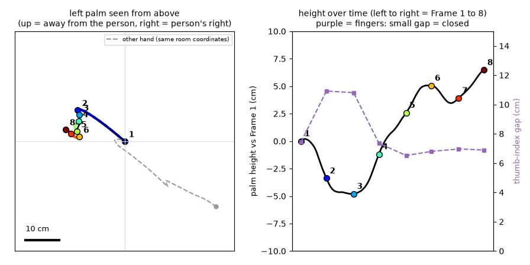
Glove and tracker measurements (3D, in the room; not affected by the camera moving): - The left palm ends 18 cm to the person's left, 4 cm away from the person, 6 cm up from where it started (27 cm in a straight line, 43 cm along its path), and it goes up to 6 cm and down to 5 cm. - The fingers stay open the whole time (thumb-index fingertip gap 7-11 cm): they do not close on anything. - The head camera turns 10 degrees to the right during these frames, so in the pictures the hand can look more still than it is. - The right hand meanwhile moves 28 cm to the person's left, 20 cm away from the person.
With 1 s of context before and after ▸ (dimmed outside the move)
call A's reasoning
What call A was given ▸ (8 frames + glove measurements)


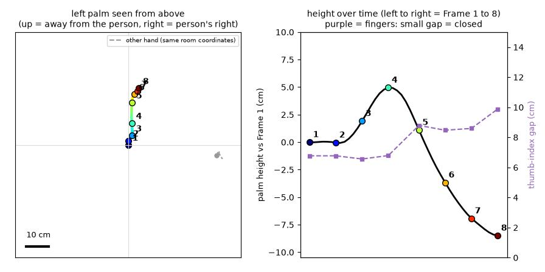
Glove and tracker measurements (3D, in the room; not affected by the camera moving): - The left palm ends 5 cm to the person's right, 25 cm away from the person, 8 cm down from where it started (27 cm in a straight line, 35 cm along its path), and it goes up to 5 cm and down to 8 cm. - The fingers stay open the whole time (thumb-index fingertip gap 7-10 cm): they do not close on anything. - The head camera turns 12 degrees to the right during these frames, so in the pictures the hand can look more still than it is. - The right hand meanwhile moves 4 cm down.
With 1 s of context before and after ▸ (dimmed outside the move)
- Grab a bread slice from the leftmost white paper plate and put it on the middle white paper plate.
- Lift up a piece of bread from the leftmost disposable plate and place it on the middle disposable plate.
- Take a slice of brown bread from the leftmost white plate and set it on the middle white plate.
- Pick up a wheat bread slice from the leftmost white paper plate and place it on the middle white paper plate.
- Grab a slice of bread from the leftmost disposable plate and put it on the middle disposable plate.
call A's reasoning
The left hand starts open over the leftmost plate (Frame 1), closes its fingers between Frames 2-3 to grasp a slice of bread, lifts it upward and moves it rightward (Frames 3-5, rising 11 cm and moving 22 cm), then opens its fingers between Frames 6-7 to release the bread onto the middle plate (Frame 7-8). The trajectory and finger gap data confirm a complete pick-and-place motion.
What call A was given ▸ (8 frames + glove measurements)


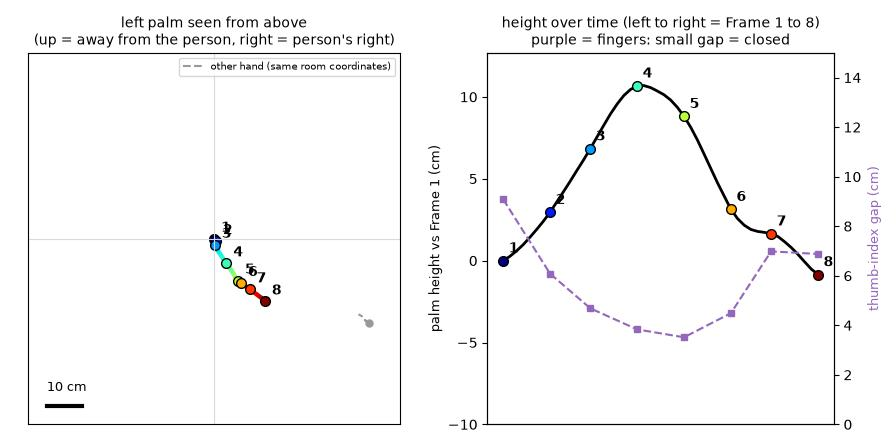
Glove and tracker measurements (3D, in the room; not affected by the camera moving): - The left palm ends 14 cm to the person's right, 18 cm toward the person from where it started (22 cm in a straight line, 37 cm along its path), and it rises up to 11 cm. - The fingers start open, then close between Frame 2 and 3, then open again between Frame 6 and 7 (thumb-index fingertip gap at Frames 1-8: 9, 6, 5, 4, 4, 4, 7, 7 cm). - The head camera turns 5 degrees to the left during these frames, so in the pictures the hand can look more still than it is. - The right hand meanwhile moves less than 3 cm in any direction.
With 1 s of context before and after ▸ (dimmed outside the move)
- Move the left hand toward the bread slice on the white plate.
- Move the left hand toward the piece of bread on the paper plate.
- Move the left hand toward the slice of brown bread on the disposable plate.
- Move the left hand toward the wheat bread slice on the white paper plate.
call A's reasoning
The left palm moves 23 cm in a straight line (29 cm along path) toward the center plate with bread, as shown by the trajectory and 3D measurements. The fingers remain half-closed (4–10 cm gap) throughout — never closing to grasp or pick up. The hand hovers over the bread without making contact or altering its position. Since no grasping, lifting, or placing occurs, and the motion is purely translational toward an object without interaction, the action is best described as moving toward it.
What call A was given ▸ (8 frames + glove measurements)


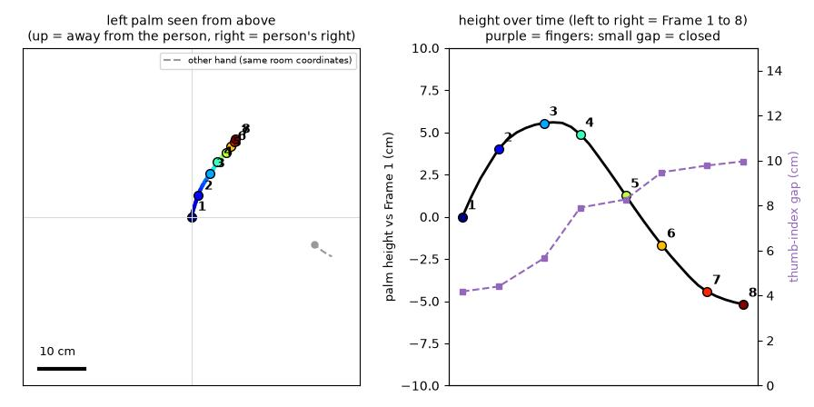
Glove and tracker measurements (3D, in the room; not affected by the camera moving): - The left palm ends 10 cm to the person's right, 17 cm away from the person, 5 cm down from where it started (23 cm in a straight line, 29 cm along its path), and it goes up to 6 cm and down to 5 cm. - The fingers stay half-closed the whole time (thumb-index fingertip gap 4-10 cm): they do not close on anything. - The head camera turns 10 degrees to the right during these frames, so in the pictures the hand can look more still than it is. - The right hand meanwhile moves 4 cm to the person's right.
With 1 s of context before and after ▸ (dimmed outside the move)
call A's reasoning
The left hand (yellow skeleton, blue dot) starts near the top plate and moves leftward and downward to the bottom-left plate, covering 36 cm along its path and rising 10 cm vertically. The fingers remain half-closed (3-6 cm gap) throughout — never closing fully — so no grasping or picking up occurs. The hand does not interact with any object; it merely repositions itself from one plate area to another without touching or manipulating anything. Since there is no object interaction and no meaningful grasp or release, the action is non-interactive motion.
What call A was given ▸ (8 frames + glove measurements)


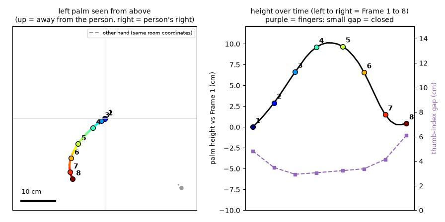
Glove and tracker measurements (3D, in the room; not affected by the camera moving): - The left palm ends 10 cm to the person's left, 18 cm toward the person from where it started (24 cm in a straight line, 36 cm along its path), and it rises up to 10 cm. - The fingers stay half-closed the whole time (thumb-index fingertip gap 3-6 cm): they do not close on anything. - The head camera turns 12 degrees to the left during these frames, so in the pictures the hand can look more still than it is. - The right hand meanwhile moves less than 3 cm in any direction.
With 1 s of context before and after ▸ (dimmed outside the move)
- Move the left hand over the bread slice.
- Move the left hand over the piece of bread.
- Move the left hand over the slice of brown bread.
- Move the left hand over the wheat bread slice.
call A's reasoning
The left palm moves 23 cm (path 39 cm) to the right and rises 11 cm, indicating a clear motion rather than holding still. However, the glove measurements confirm the fingers remain open (4-7 cm gap) throughout all frames, meaning no grasping occurs. Since the hand does not close on the bread or plate, it cannot be described as picking up or placing an object. The motion is a non-contact reach or sweep over the items.
What call A was given ▸ (8 frames + glove measurements)


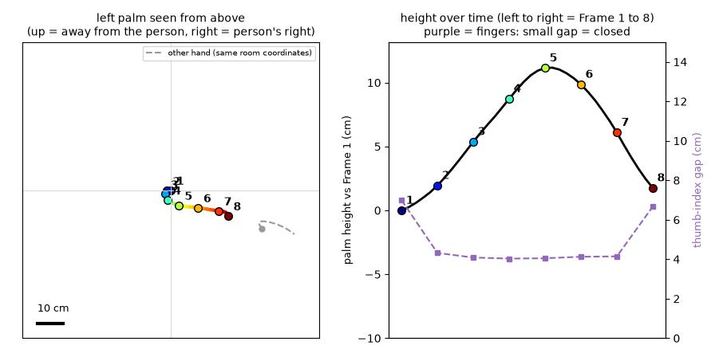
Glove and tracker measurements (3D, in the room; not affected by the camera moving): - The left palm ends 22 cm to the person's right, 10 cm toward the person from where it started (23 cm in a straight line, 39 cm along its path), and it rises up to 11 cm. - The fingers stay open the whole time (thumb-index fingertip gap 4-7 cm): they do not close on anything. - The head camera turns 13 degrees to the right during these frames, so in the pictures the hand can look more still than it is. - The right hand meanwhile moves 13 cm to the person's right, 13 cm up.
With 1 s of context before and after ▸ (dimmed outside the move)
- Move the left hand toward the bread on the central white plate.
- Move the left hand toward the bread on the central disposable plate.
- Move the left hand toward the bread slice on the central white paper plate.
- Move the left hand toward the bread slice on the central white plate.
call A's reasoning
The left palm trajectory (blue-to-red path) shows a clear lateral movement of 34 cm to the person’s right, with a slight downward drop of 4 cm, indicating active motion rather than static holding. The glove measurements confirm the fingers remain open throughout (thumb-index gap 5–7 cm), so no grasping or picking up occurs. The hand moves purposefully toward the bread on the central plate but does not close around it — thus, the action is reaching or moving toward, not interacting via grasp. Since the hand is clearly moving toward an object (bread) with intent (trajectory directed at it), we describe the motion relative to that object.
What call A was given ▸ (8 frames + glove measurements)


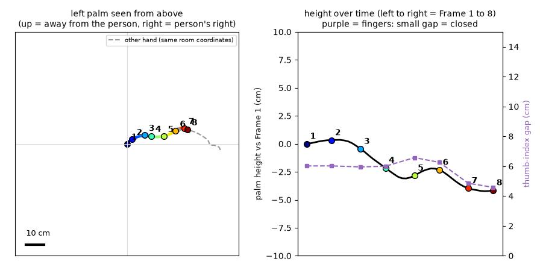
Glove and tracker measurements (3D, in the room; not affected by the camera moving): - The left palm ends 34 cm to the person's right, 8 cm away from the person, 4 cm down from where it started (35 cm in a straight line, 38 cm along its path), and it drops by up to 4 cm. - The fingers stay open the whole time (thumb-index fingertip gap 5-7 cm): they do not close on anything. - The head camera turns 20 degrees to the right during these frames, so in the pictures the hand can look more still than it is. - The right hand meanwhile moves 24 cm to the person's right, 12 cm toward the person, 5 cm down.
With 1 s of context before and after ▸ (dimmed outside the move)
- Move the bread slice on the left white plate.
- Move the piece of bread on the left disposable plate.
- Move the slice of brown bread on the left paper plate.
- Move the wheat bread slice on the left white paper plate.
call A's reasoning
The left hand (yellow skeleton, blue dot) starts with fingers already closed around a slice of bread on the left plate (Frame 1). The 3D measurements confirm the palm moves 20 cm in a straight line and 38 cm along its path, dropping 3 cm in height, while the thumb-index gap remains small (3-7 cm), indicating the fingers stay closed. This motion corresponds to lifting and moving the held object. The hand ends up over the same plate, having repositioned the bread slightly. Since the hand was already grasping at the start and only moved the object without releasing or picking it up from a new location, the action is best described as moving or adjusting the held item.
What call A was given ▸ (8 frames + glove measurements)


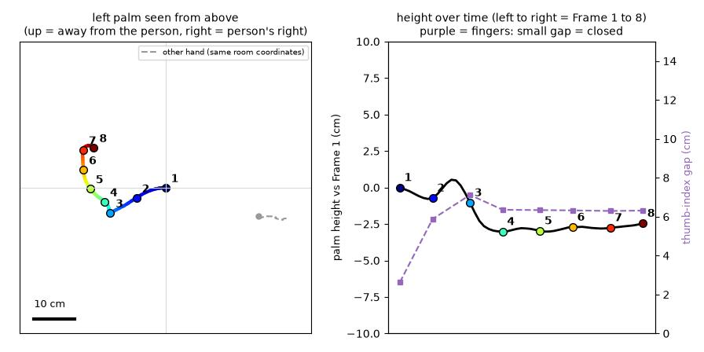
Glove and tracker measurements (3D, in the room; not affected by the camera moving): - The left palm ends 18 cm to the person's left, 10 cm away from the person from where it started (20 cm in a straight line, 38 cm along its path), and it drops by up to 3 cm. - The fingers stay closed the whole time (thumb-index gap 3-7 cm). - The head camera turns 14 degrees to the left during these frames, so in the pictures the hand can look more still than it is. - The right hand meanwhile moves 7 cm to the person's right.
With 1 s of context before and after ▸ (dimmed outside the move)
- Move the left hand toward the bread on the central white plate.
- Move the left hand toward the bread on the central disposable plate.
- Move the left hand toward the bread on the central paper plate.
- Move the left hand toward the bread on the central plate.
call A's reasoning
The left palm moves 24 cm to the right and rises 5 cm, indicating a clear translational motion rather than a static hold. The finger gap remains 6–11 cm throughout, confirming no grasping occurs. The trajectory shows the hand moving from an empty plate toward the central plate with bread slices, ending near or over that plate without closing fingers — thus, it is reaching or moving toward the bread, not picking it up.
What call A was given ▸ (8 frames + glove measurements)


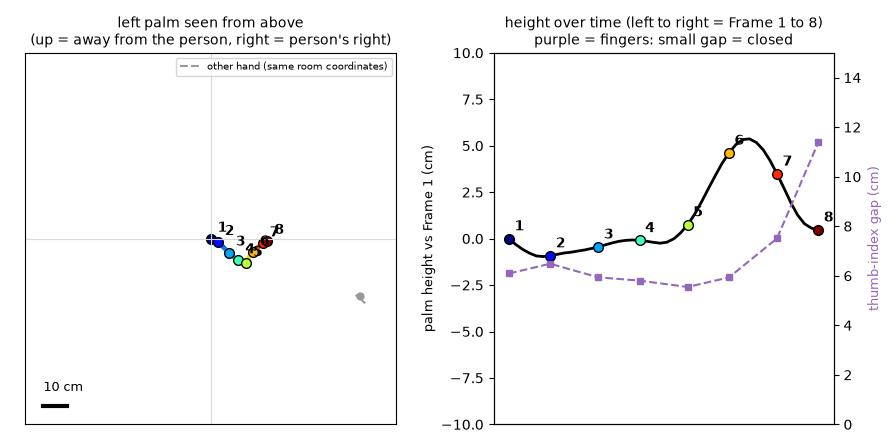
Glove and tracker measurements (3D, in the room; not affected by the camera moving): - The left palm ends 24 cm to the person's right from where it started (24 cm in a straight line, 36 cm along its path), and it rises up to 5 cm. - The fingers stay open the whole time (thumb-index fingertip gap 6-11 cm): they do not close on anything. - The head camera turns 2 degrees to the right during these frames. - The right hand meanwhile moves less than 3 cm in any direction.
With 1 s of context before and after ▸ (dimmed outside the move)
- Put the bread slice on the white paper plate.
- Set the piece of bread on the white plate.
- Place the slice of brown bread on the disposable plate.
- Put the wheat bread slice on the paper plate.
- Set the slice of bread on the white paper plate.
call A's reasoning
The left hand starts with fingers open (Frame 1), closes to grasp a slice of bread (Frame 2), lifts it (height rises to ~13 cm by Frame 2-3), then opens fingers to release the bread onto a plate (Frame 4). The palm moves 39 cm in 3D space, confirming active transport. No other object is interacted with by the left hand. The action is complete within these frames: grasp, lift, place.
What call A was given ▸ (8 frames + glove measurements)


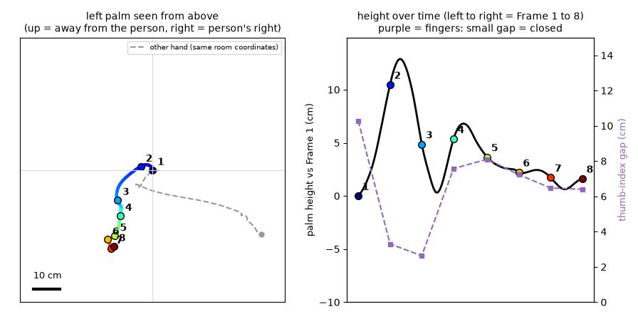
Glove and tracker measurements (3D, in the room; not affected by the camera moving): - The left palm ends 15 cm to the person's left, 29 cm toward the person from where it started (39 cm in a straight line, 70 cm along its path), and it rises up to 13 cm. - The fingers start open, then close between Frame 1 and 2, then open again between Frame 3 and 4 (thumb-index fingertip gap at Frames 1-8: 10, 3, 3, 8, 8, 7, 6, 6 cm). - The head camera turns 6 degrees to the left during these frames, so in the pictures the hand can look more still than it is. - The right hand meanwhile moves 38 cm to the person's left, 24 cm away from the person.
With 1 s of context before and after ▸ (dimmed outside the move)
call A's reasoning
The left hand (yellow skeleton) remains in the bottom-left corner of the frame throughout the sequence, hovering near the plate of bread. The provided measurements confirm the palm moves only 13 cm along a path on the desk surface and the fingers stay open (6 cm gap) the entire time. Since the hand does not close to grasp the bread and the movement is minimal and lateral rather than a functional reach or lift, no specific object interaction is completed.
What call A was given ▸ (8 frames + glove measurements)


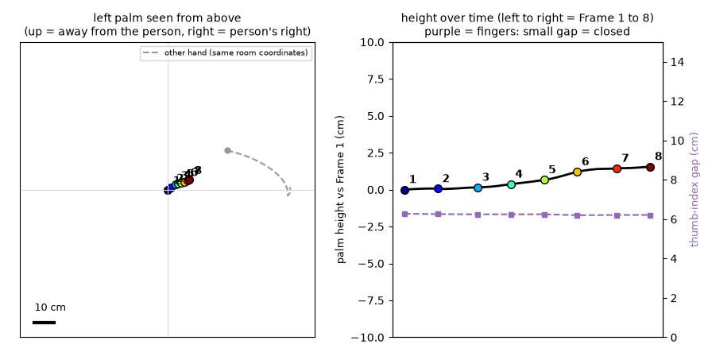
Glove and tracker measurements (3D, in the room; not affected by the camera moving): - The left palm ends 11 cm to the person's right, 5 cm away from the person from where it started (12 cm in a straight line, 13 cm along its path), and it stays at the same height (within 3 cm), i.e. it moves along the desk surface. - The fingers stay open the whole time (thumb-index fingertip gap 6-6 cm): they do not close on anything. - The head camera turns 24 degrees to the right during these frames, so in the pictures the hand can look more still than it is. - The right hand meanwhile moves 32 cm to the person's right, 18 cm toward the person, 4 cm down.
With 1 s of context before and after ▸ (dimmed outside the move)
- Put the bread slice on the white paper plate.
- Set the piece of bread on the white plate.
- Place the slice of brown bread on the disposable plate.
- Put the wheat bread slice on the paper plate.
- Set the slice of bread on the white paper plate.
call A's reasoning
The left hand (yellow skeleton, blue dot) starts near a plate with bread slices and moves rightward over ~42 cm to an empty plate. The trajectory shows it carries a slice of bread throughout the motion. Fingers remain half-closed (4-5 cm gap), never fully closing or opening — so no grasp/release occurred within these frames. The hand places the bread onto the target plate by Frame 8, as seen visually and confirmed by the palm’s final position over the plate. Since the action completes placement within the sequence, and the object is clearly interacted with, we describe the full intent: moving and depositing the bread.
What call A was given ▸ (8 frames + glove measurements)


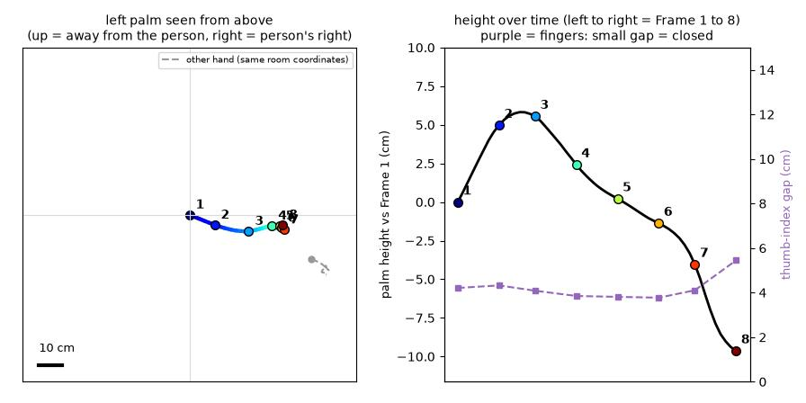
Glove and tracker measurements (3D, in the room; not affected by the camera moving): - The left palm ends 40 cm to the person's right, 4 cm toward the person, 10 cm down from where it started (42 cm in a straight line, 54 cm along its path), and it goes up to 6 cm and down to 10 cm. - The fingers stay half-closed the whole time (thumb-index fingertip gap 4-5 cm): they do not close on anything. - The head camera turns 40 degrees to the right during these frames, so in the pictures the hand can look more still than it is. - The right hand meanwhile moves 6 cm to the person's right, 7 cm toward the person, 7 cm down.